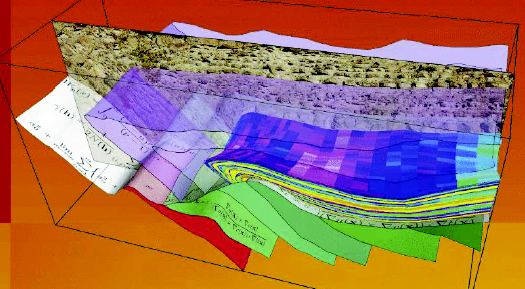

 En esta página se incluyen notas sobre Geoestadística escritas años atrás, y que reflejan mi gusto e interés en la disciplina. Algunas de ellas se originan en notas de clase del curso de Modelos Estocásticos, dictado en el Postgrado de Computación de la Facultad de Ingeniería LUZ (La Universidad del Zulia). Otras, en mi trabajo como asesor en Geoestadística de la Fundación Petrociencia en proyectos destinados a Petróleos de Venezuela (PDVSA). Por último, buena parte de estas notas son subproductos de trabajos de Investigación en el área de Surrogate-based optimization for engineering design, que comparte con la Geoestadística los fundamentos estocásticos.